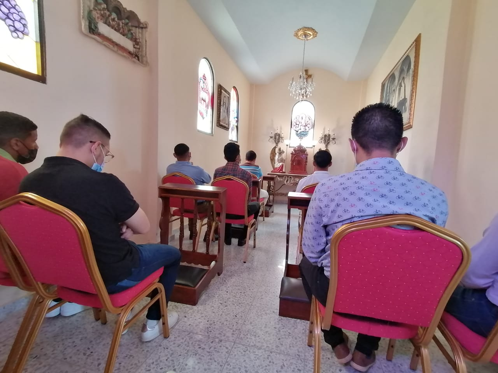
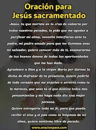
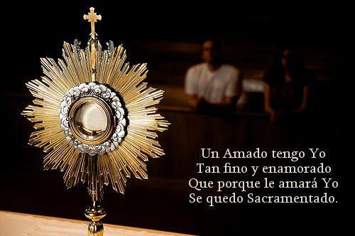
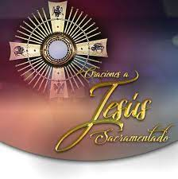
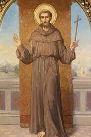
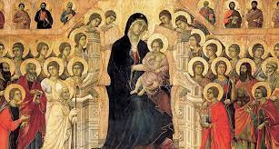
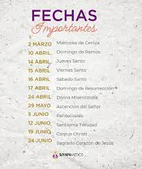
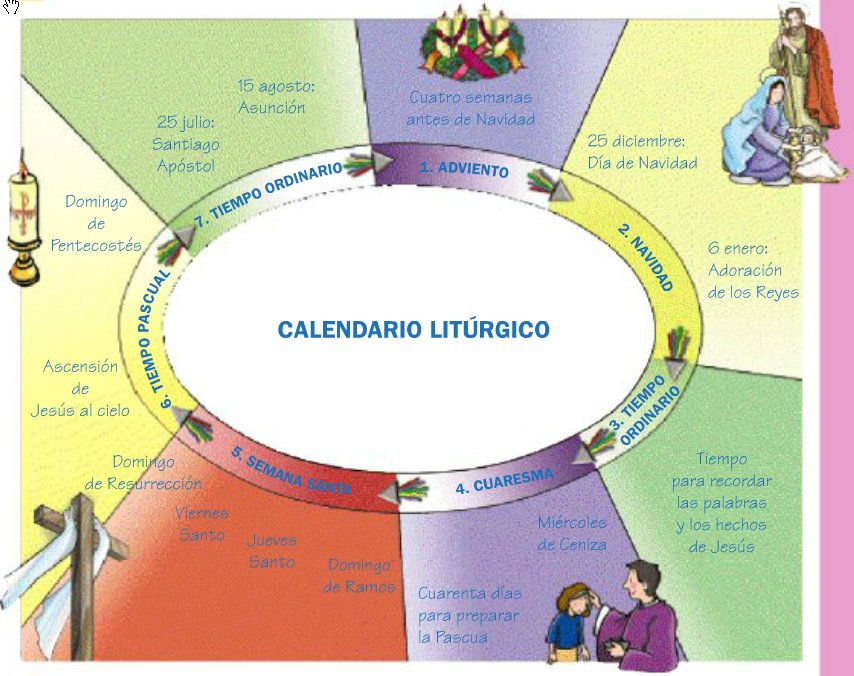
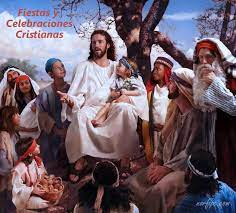

Guianos DIOS en un buen camino
Mas a cuantos lo recibieron, a los que creen en su nombre, les dio el derecho de ser hijos de Dios”. —Juan 1:12

ADORACION Y EXPOSICION DEL SANTÍSIMO SACRAMENTOLeer mas..
Capilla del santisimo.
MENSAJE POSITIVO PARA LOS JOVENES Leer mas...
encuentro de jovenes .
Catequesis sobre el Espíritu Santo para jóvenesLeer mas..
dios cuida de nosotros.
La Biblia dice:
Hay caminos que al hombre le parecen rectos, pero que acaban por ser caminos de muerte”. —Proverbios 14:12
“Porque hay un solo Dios y un solo mediador entre Dios y los hombres, Jesucristo hombre”. —1 Timoteo 2:5
El propósito de Dios: la paz y la vida
Jesucristo murió en la cruz y resucitó de la muerte. Al hacerlo, pagó la pena por nuestro pecado y tendió un puente entre nosotros y Dios.
- Todos
- santos
- oracion a jesus sacramentado
- fechas especiales

oracion

oracion

oracion

santo
santos

santos

celebraciones

celebraciones
